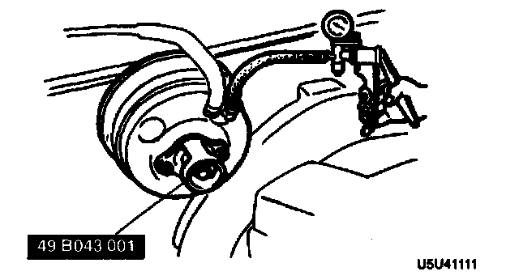
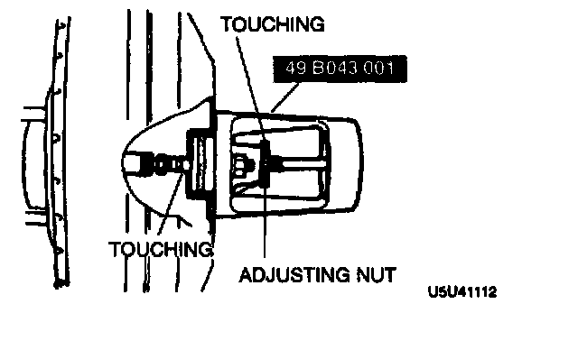
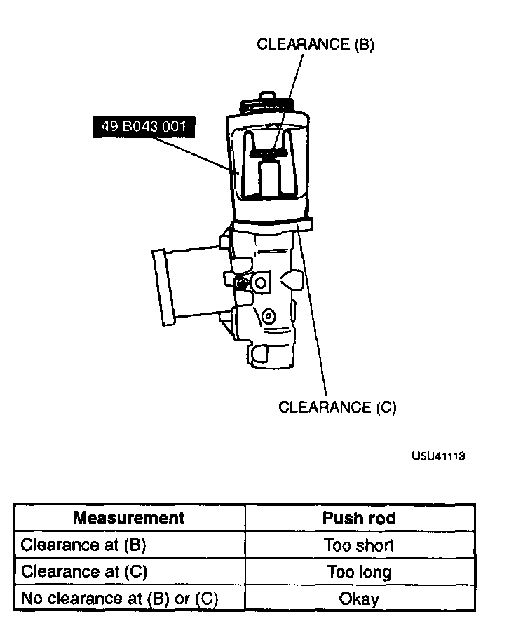
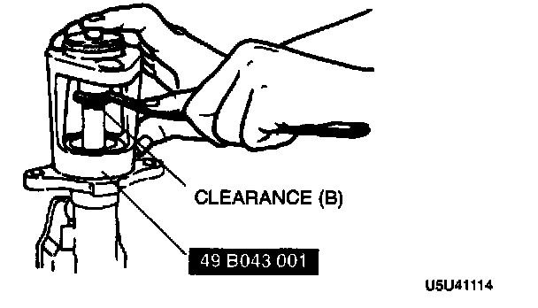
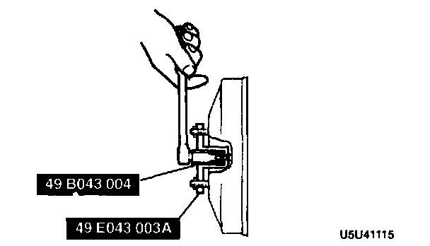
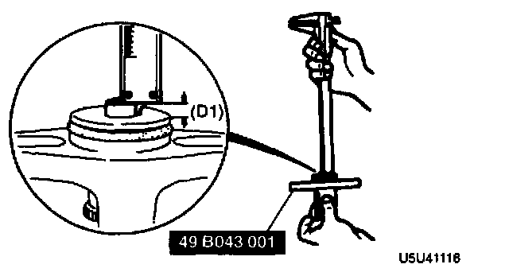
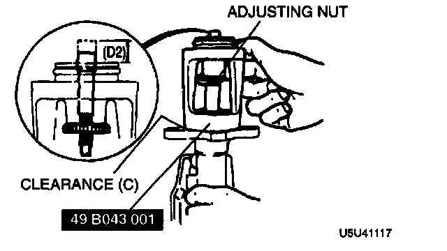
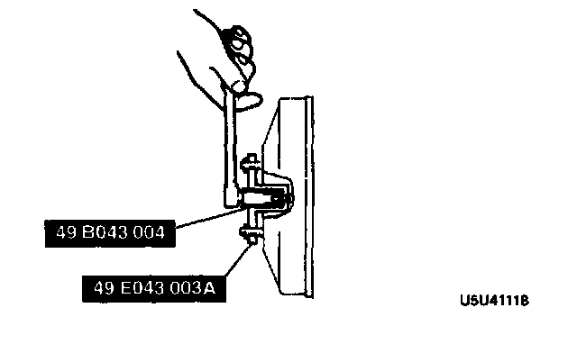

Removal and Installation

MASTER CYLINDER REMOVAL/INSTALLATION
1. Remove in the order indicated in the table.
2. Install in the reverse order of removal.
ABS model
1. Inspect the push rod clearance as follows.
1) Turn the nut of the Special Service Tool (SST) clockwise to fully retract the SST gauge rod. Attach the SST to the power brake unit.
Tightening torque: 9.8-16 Nm (1.0-1.6 kgf-m, 7.2-11 ft. lbs.)

2) Apply a 66.7 kPa (500 mm-Hg, 19.7 in-Hg) vacuum by using a vacuum pump.

3) Turn the adjusting nut of the SST counterclockwise until the gauge rod just contacts the push rod end of the power brake unit. Push lightly on the end of the gauge rod to be sure it is seated. Verify that there is no gap between the adjusting nut and SST body.
4) Remove the SST from the power brake unit without disturbing the adjusting nut. Set the SST onto the master cylinder as shown in the figure.
Caution: When pushing the SST gauge rod into the master cylinder piston, only use enough pressure to push the rod to the bottom of the piston. If too much pressure is applied, a false reading will occur.

5) Push lightly on the end of the SST gauge rod to be sure it has contacted the bottom of the master cylinder piston, but do not push so hard that the piston moves. Note any clearance between the SST body and the adjusting nut (clearance B) or between the body and the master cylinder (clearance C).
2. Adjust the push rod clearance at B.
Note: The threads of the push rod are specially designed so that the bolt becomes harder to turn past a certain point. This is to prevent the bolt from coming loose. Turn the bolt only within this range when adjusting.

1) Push lightly on the end of the SST gauge rod, and measure the clearance between the adjusting nut and the SST body.

2) Using the SST, turn the nut to lengthen the power booster push rod an amount equal to the clearance measured at B.
3. Adjust the push rod clearance at C.
Note: The threads of the push rod are specially designed so that the bolt becomes harder to turn past a certain point. This is to prevent the bolt from coming loose. Turn the bolt only within this range when adjusting.

1) Measure and record height D1 of the gauge rod.
2) Turn the adjusting nut until the SST body sets squarely on the master cylinder. (Turn only enough for the body to touch.)
3) Measure and record height D2 of the gauge rod.


4) Subtract D1 from D2 and, by using the SST, turn the nut to shorten the power booster push rod an amount equal to the sum.